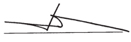

XacBank
Ganbold.Ch
Chairman of the Board
of Directors of XacBank
Dear Shareholders,Customers, Clients, Partners and Employees,
I am pleased to address you in our Annual Report and present the 2013 operational results of XacBank (the “Bank”). XacBank has arrived at the beginning of a new era, leaving behind a dozen years since the issuance of its banking license from the Central Bank of Mongolia, and I am proud to state that this historical cycle was the time of sustainable development and growth.
I would like to thank, first of all, our 1,700 employees who have worked hard to make the fiscal year of 2013 another success story, full of achievements, as well as the management team of the Bank for their leadership and skillful guidance. My deep gratitude goes to all our customers, clients and partner organizations for their trust and cooperation with us throughout all these years. I extend my sincere appreciation to the shareholders of TenGer Financial Group for their undoubted support and collaboration. And, finally, I thank my fellow board directors for their wholehearted dedication to the Bank.
I am delighted to say that, again in 2013, in the face of a very challenging economic environment, XacBank was able to ensure sustained growth, successfully fulfilling both quantitative and qualitative goals and targets for the year,approved by the Board of Directors, and delivering high-quality and reliable financial intermediation services of a systemic nature.
While the shareholders, the Board of Directors and the executive management team of XacBank have confidence in the medium to long-term development prospects of Mongolia, we, nevertheless, acknowledge that the economic outlook will remain dim in the next couple of years for the world and Mongolia and, thus, have set our short and medium-term goals and targets as well as our development policies with such assumptions. Therefore, we determined our 2013 goals by combining quantitative targets within manageable risk levels with qualitative goals for developing institutional capacity able to sustain future growth.
Along with providing the executive management with effective oversight and guidance, the Board of Directors of the Bank dedicated its efforts to facilitate the entry of new investors to support the Bank’s sustainable future growth as well as to ensure opportunities for long-standing shareholders to realize return on their investments. As a result of these efforts, the ownership structure of XacBank has not only maintained its diversity and balance but become more open and strengthened with strategic investors bringing more value.
I am fulfilled to state that, in a gloomy investment environment of Mongolia, we were able to bring in a major reputable investor from Japan and increase direct participation of Mongolia’s big business. As a result of these changes in the Bank’s ownership, the governance framework will improve further, thus, strengthening security of the Bank’s and its customers’ future.
In 2013, XacBank showed not only solid results in terms of the quality of lending operations, sustainable growth far exceeding the average of the banking system and keeping the position of a strong competitor in the market but made also considerable investments to make its services more accessible, swifter and safer for customers.
Realizing that, along with expansion in its customer base and influence of systemic proportions, it is important than ever to bring the quality and immunity of its corporate governance to the next stage of excellence, the Board of Directors plans to focus special efforts in this direction in 2014.
Along with trust and hope of our customers and clients, the Bank’s responsible growth and financial potential as well as further trends were evaluated by international rating agencies with a “stable” credit rating. Furthermore, XacBank was recognized as the Best Bank in Mongolia in 2013 by The Banker, a London-based international financial affairs magazine, as a Distinguished Entrepreneur by the Mongolian National Chamber of Commerce and Industry and as the Best Retail Bank of Mongolia by the Global Banking and Finance Review.
Finally, let me reassure that, together with our customers and clients, borrowers and other partners as well as our shareholders, who entrusted their investments to us, and all XacBankers, who handle day-to-day operations, we will dedicate all our efforts and aspirations to the implementation of the Bank’s short and medium-term plans and goals. We Love Our Motherland!
Ganbold.Ch
Chairman of the Board of Directors of XacBank